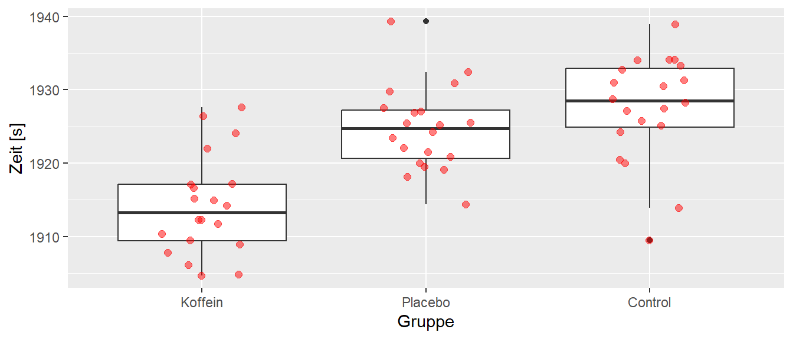
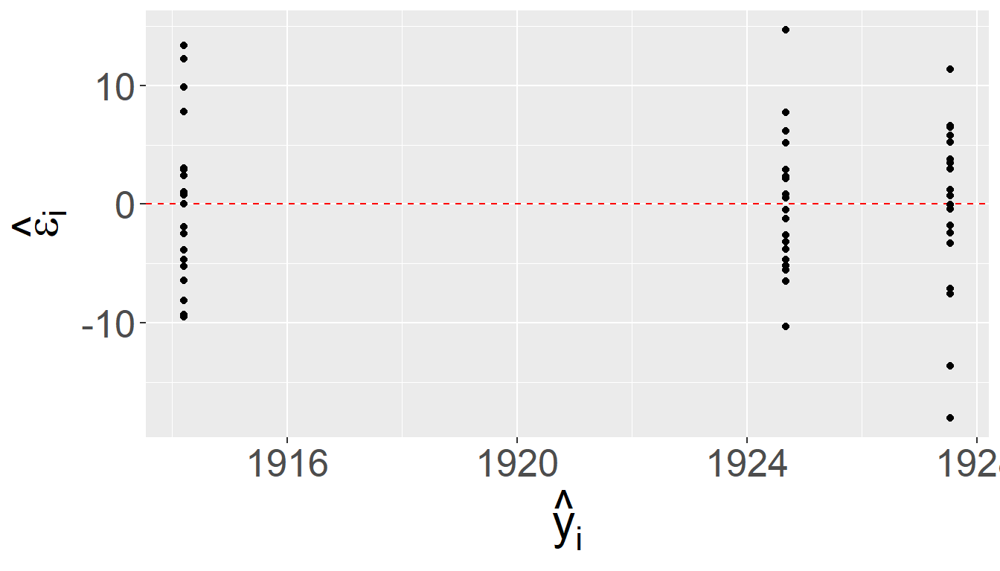

23 Completely Randomized Design
Das erste experimentelle Design, das wir uns anschauen, ist das completeley randomized design. Wir haben unterschiedliche experimentelle Konditionen von denen wir ausgehen, dass diese sich unterschiedlich auf die experimentellen units (EU) auswirken. Beispielsweise wollen wir die Balancierfähigkeit unter drei verschiedenen Konditionen, z.B. fester Untergrund, weicher Untergrund und wackeliger Untergrund. Die Balancierfähigkeit ist aber auch durch zahlreiche andere Einflussfaktoren beeinflusst, z.B. Vorerfahrung, Kraftfähigkeit etc. Viele von diesen Einflussfaktoren kennen wir vielleicht gar nicht bzw. für diese zu kontrollieren wäre zu aufwendig. Um jedoch dennoch für diese Störgrößen zu kontrollieren setzen wir Randomisierung ein. Jeder einzelne Versuchsteilnehmer bzw. Versuchsteilnehmerinn muss dazu randomisiert auf eine der drei Kondition verteilt werden. Damit werden die Teilnehmer(innen) zu den EUs. Nach Durchsicht der Literatur könnte die Balancierfähigkeit z.B. mit einer Kraftmessplatte erfasst werden. Hieran schließt sich noch die Festsetzung der observational units, d.h. in diesem Falle, der Anzahl der Messwiederholungen an um die Reliabität auf ein gewünschtes Niveau zu heben. Diesen Teil vernachlässigen wir zunächst einmal.
23.1 Das Modell
Um diesem Design ein statistisches Modell anzupassen, müssen wir uns nun Gedanken über den DGP machen. Zunächst einmal wird jede(r) Teilnehmer(in) eine bestimmte Balancierfähigkeit haben. Bzw. wenn wir die Kondition mit dem festen Untergrund als eine Referenzkondition festlegen, können wir davon ausgehen, dass es eine mittlere Balancierfähigkeit gibt und die einzelnen Personen aus der Population um diesen Mittelwert schwanken. Dieser Mittelwert bekommt einen eigenen Parameter \(\mu\). Jetzt gegen wir davon aus, dass die unterschiedlichen Konditionen dazu führen, dass die Basisbalancierfähigkeit von den Konditionen beeinflusst wird. D.h. es kommt zu einer Veränderung oder Abweichung von \(\mu\). Diese Abweichungen bezeichnen wird mit \(\tau_i\) wobei der Index \(i\) dann die jeweilige Kondition \(i\) kennzeichnet. Insgesamt führen diese Überlegungen zu dem folgenden Modell:
\[\begin{equation} Y_{ij} = \mu + \tau_i + \epsilon_{ij}, \qquad \epsilon_{ij}\sim \mathcal{N}(0,\sigma^2) \label{eq-ed-crd-model} \end{equation}\]
i = Gruppenindikator, j = experimental unit-indikator, \(\mu\) = Gesamtmittelwert, , K = Anzahl der Faktorstufen
Um den Einfluss \(\tau_i\) der verschiedenen Konditionen zu bestimmen können benötigen wir Replikationen der EUs. In unserem Fall erreichen wird die Replikation dadurch, dass mehrere Versuchspersonen, die EUs, unter jeder Kondition \(i\) beobachtete werden. Die einzelnen EUs erhalten dabei den Index \(j\).
Um ein statistisches Modell formulieren zu können benötigen wir wie immer bestimmte Annahmen. Diese sind jedoch immer noch die gleichen Annahmen, die wir schon vorher bei der multiplen Regression angesetzt haben.
- Unabhängige Experimental Units (EU)
- Die EUs sind randomisiert in K Gruppen eingeteilt worden
- Die Konditionen wurden unabhängig auf die individuellen experimentellen Einheiten angewendet
- Die Werte in jeder Gruppe sind Normalverteilt \(Y_{ij} \sim \mathcal{N}(\mu_i, \sigma_i^2)\)
- Die Varianzen \(\sigma_i^2\) in jeder Gruppe \(i\) sind gleich, \(\sigma_i^2 = \sigma^2, i = 1,2,\ldots,K\) (Homoskedastizität).
Die statistische Überprüfung führen wir nun wieder mit dem uns bekannten Modellvergleichen durch. Das Modell \(\eqref{eq-ed-crd-model}\) wird als das Full Model angesehen und wir definieren das reduzierte Modell mittels:
\[\begin{equation*} Y_{ij} = \mu + \epsilon_{ij} \end{equation*}\]
D.h. im reduzierten Modell fällt diei Faktorvariable komplett raus und als Modellparameter wird nur ein \(y\)-Achsenabschnitt, der dann gleich dem Mittelwert \(\bar{y}\) ist, verwendet. Die Teststatistik beruht daher wieder auf dem Vergleich der Residuen zwischen den beiden Modell normiert an den Residuen aus dem vollem Modell.
\[\begin{equation} F = \frac{\textrm{SSE(R)} - \textrm{SSE(F)}}{\textrm{df}_R - \textrm{df}_F} \frac{\textrm{df}_F}{\textrm{SSE(F)}} \sim F(\textrm{df}_R-\textrm{df}_F,\textrm{df}_F) \label{eq-ed-crd-modeltest} \end{equation}\]
Die Teststatistik folgt unter der \(H_0\) eine \(F\)-Statistik mit \(\textrm{df}_R - \textrm{df}_F\) und \(\textrm{df}_F\) Freiheitsgraden. Die statistischen Hypothesen sind wie bereits bei der Dummyvariablen definiert:
\[\begin{align*} H_0:& \tau_1 = \tau_2 = \ldots = \tau_k = 0 \\ H_1:& \exists\tau_i \neq \tau_j\ \textrm{mit}\ i \neq j, i,j \in \{1,2,\ldots,k\} \end{align*}\]
D.h. wir überprüfen ob die Hinzunahme der Information über die Konditionen (Faktoren) zu einer statistisch signifikanten Verminderung der Residualvarianz führt. Wenn dem nicht der Fall, dann verbessert sich der Modellfit durch die Faktorstufen \(\tau_i\) nicht.
23.1.1 Schätzung der Residualvarianz \(\sigma^2\)
Zu den Annahmen gehört auch die uns mittlerweile altbekannte Annahme der Varianzgleichheit oder Homeskedastizität für \(\sigma^2\). Wir schätzen \(\sigma^2\) mittels der \(MSE\) ab. Diese werden im Rahmen der ANOVA oftmals als within error bezeichnet, also als Fehler innerhalb der jeweiligen Gruppen. Durch die Struktur des CRD mit einm nominalen Faktoren sind die Mittelwerte der jeweiligen Gruppen die geschätzen \(Y\)-Wert also \(\hat{y}_{ij}\). Daher sind die Residuen \(\hat{\epsilon}_i\) immer die jeweiligen Abweichungen der beobachteten Wert \(y_i\) vom Gruppenmittelwert \(\bar{y}_i\).
Der Mittelwert \(\bar{y}_i\) der \(i\)-ten Gruppe wird mit den Zeichen \(\bar{y}_{i.}\) bezeichnet. Der Punkt \(.\) im Index bedeutet Summation über diesen Index. Formaler:
\[\begin{equation} \bar{y}_{i.} = \frac{1}{n_i}\sum_{j=1}^{n_i}y_{ij} \end{equation}\]
\(n_i\) ist die Stichprobengröße in Gruppe \(i\).
Unser allgemeiner Schätzfehler in dem Model \(\hat{\sigma}^2 = MSE\) berechnet sich aus der Summer der quadrierten Abweichungen \(y_{ij} - \hat{y}_{ij}\) geteilt durch die Freiheitsgrade also \(\hat{\sigma}^2 = \frac{SSE}{N-p}\) (\(p=\) Anzahl der Modellparameter). Für \(SSE\) gilt im CRD:
\[\begin{equation} \begin{aligned} SSE &= \sum_{i}\sum_{j}\hat{\epsilon}_{ij}^2 = \sum_{i}\sum_{j} (y_{ij} - \hat{y}_{ij})^2 = \sum_{i}\sum_{j}(y_{ij} - (\hat{\mu} + \hat{\tau}_i))^2 \\ &= \sum_{i}\sum_{j}(y_{it} - \bar{y}_{i.})^2 \end{aligned} \end{equation}\]
Mit etwas Algebra lässt sich zeigen, dass der Erwartungswert von \(SSE\) unter dem Modell wie folgt aussieht.
\[\begin{equation} E[SSE] = (N-K)\sigma^2 \end{equation}\]
Damit landen wir wenig überraschend wieder bei dem gleichen \(\hat{\sigma}^2\) das wir vorher auch schon unter dem allgemeinen linearem Modell hergeleitet haben.
\[\begin{equation} \hat{\sigma}^2 = \frac{SSE}{N-K} = MSE \end{equation}\]
Hier nur noch mal angezeigt um die Verbindung mit den Gruppenmittelwerten explizit zu machen bzw. wenn ihr Statistikbücher zur ANOVA anschaut, dann wird meist diese Schreibweise verwendet.
Mit etwas mehr Aufwand, lässt sich zeigen, dass \(SSE\) einer \(\chi^2\)-Verteilung mit \(N-K\) Freiheitsgraden folgt.
\[\begin{equation} \frac{SSE}{\sigma^2} \sim \chi^2_{N-K} \end{equation}\]
Über diesen Zusammenhang lässt sich eine obere \(100(1-\alpha)\%\) Konfidenzgrenze über die folgende Formel herleiten:
\[\begin{equation} \sigma^2 \leq \frac{SSE}{\chi^2_{N-K,\alpha}} \label{eq-crd-sigma-chi} \end{equation}\]
Diese Grenze wird später noch einmal interessant werden, wenn wir Stichprobengrößen mittels einer Poweranalse ermitteln wollen.
23.2 Beispieldaten
Schauen wir uns als nächstes einen Beispieldatensatz an und gehen durch die verschiedenen Schritte der Analyse eines CRD.
In Abbildung 23.1 ist das Ergebnis einer Untersuchung zum Einfluss von Koffein auf die Laufleistung bei einem 8Km Ausdauerlauf zu abgebildet. Insgesamt sind \(N=60\) Probanden randomisiert in drei Gruppen eingeteilt worden: Koffein, Placebo und Control. Die Gruppe Koffein hat vor dem Lauf ein Koffeinpräparat eingenommen, während die Placebogruppe ein Präparat ohne Wirkstoff eingenommen hat. Die Kontrollgruppe hat vor dem Lauf kein Zusatzpräparat eingekommen. Jeder Proband lief einmal die Strecke von \(8\) Km so schnell wie möglich. Die abhängige Variable war die Laufzeit.
Abbildung 23.1 deute an, das die Einnahme von Koffein zu einer Leistungsverbesserung führt, während der Einfluss des Placebos scheinbar möglicherweise nur zu einer leichten Verbesserung gegenüber der Kontrollkondition geführt hat.
Schauen wir uns die deskriptive Statistik der Daten an. In Tabelle 23.1 sind die deskriptiven Werte der Daten abgebildet.
23.2.1 Descriptive Statistics
23.2.1.1 Zeit by Gruppe
N: 20
| Gruppe = Koffein | Gruppe = Placebo | Gruppe = Control | |
|---|---|---|---|
| Mean | 1914.20 | 1924.68 | 1927.54 |
| Median | 1913.24 | 1924.72 | 1928.52 |
| Std.Dev | 6.78 | 5.72 | 7.23 |
| Q1 | 1909.25 | 1920.46 | 1924.70 |
| Q3 | 1917.16 | 1927.32 | 1933.05 |
Die Standardabweichungen in den drei Gruppen sind in Tabelle 23.1 relativ ähnlich, so dass hier schon einmal keine größeren Probleme zu erwarten sind. Die Mittelwerte und Mediane liegen ebenfalls ziemlich nahe beieinander. Was unseren Eindruck aus Abbildung 23.1 bestätigt.
Bei der Analyse von CRD Experimenten wird in dem meisten Fällen weniger die einzelnen Koeffzienten gesucht sondern es es wird die Varianz die Aufgrund der Modellparameter aufgeklärt werden kann im Vergleich zum reduzierten Modell untersucht. Formal kommt es zu einer Varianzzerlegung, Analyse der Varianz, analysis of variance = ANOVA.
\[\begin{equation} \sigma_{Y}^2 = \sigma_{\text{Modell}}^2 + \sigma_{\epsilon}^2 = \sigma_{\text{between}}^2 + \sigma_{\epsilon}^2 \end{equation}\]
In der Terminologie der CRD wird die Modellvarianz \(\sigma_{\text{Modell}}\) als \(\sigma_{\text{between}}\) bezeichnet. Dies soll ausdrücken, dass diese Varianzkomponente die Varianz die durch die verschiedenen Konditionen der nominalen Variablen zustande kommt. Das Ergebnis der Varianzanalyse wird in einer sogenannten \(F\)-Tabelle dokumentiert.
| \(df\) | \(SSQ\) | \(MSQ\) | \(F\) | Expected Mean Square | |
|---|---|---|---|---|---|
| Between | \(K-1\) | \(SS_b\) | \(MS_b=\frac{SS_b}{K-1}\) | \(\frac{MS_b}{MS_w}\) | \(\sigma^2 + Q(\tau_i)\) |
| Residual | \(N-K\) | \(SS_w\) | \(MS_w=\frac{SS_w}{N-K}\) | \(\sigma^2\) | |
| Total | \(N-1\) | \(SS_{\text{total}}\) | \(MS_{\text{total}}\) |
\(df\) sind die Freiheitsgrade, \(SSQ\) die Quadratsummen, \(MSQ\) die mittleren Quadratsummen, \(F\) der resultierende \(F\) Wert und Expected Mean Squared der Erwartungswert der jeweiligen Varianzkomponente.
Beim Erwartungswert für \(MS_b\) haben wir einen Term \(Q(\tau_i)\) der wie folgt definiert ist wenn die Stichprobengröße \(n_i\) gleich \(K\) gleich groß \(n_i = n, \forall i\) ist.
\[\begin{equation} Q(\tau_i) = n\frac{\sum_{i=1}^K(\tau_i - \bar{\tau}_.)^2}{K-1} \label{eq-ed-crd-Q_1} \end{equation}\]
Schauen wir uns die Formel\(\eqref{eq-ed-crd-Q_1}\) für \(Q(\tau_i)\) genauer an, dann erkennen wir vielleicht etwas verklausuliert die Varianz der Effekte \(\tau_i\) der verschiedenen Konditionen. D.h der Erwartungswert von \(MS_b\) setzt sich aus zwei Komponenten zusammen. Der Residualvarianz \(\sigma^2\) und \(Q(\tau_i)\), der Varianz der Effekte der Konditionen. Unter der \(H_0\) gilt \(\tau_i = 0\) für alle \(i\). Dadurch wird dann die \(Q(\tau_i)\) ebenfalls \(=0\) und der Erwartungswert von \(MS_b\) wird dann ebenfalls nur noch zu \(\sigma^2\).
Dadurch kann ein Hypothesentest erstellt werden um einen \(F\)-Wert berechnen, bzw. mit mittelinvolvierter Algebra lässt sich zeigen, dass dieser Test äquivalent zu dem Modellvergleich in Formel \(\eqref{eq-ed-crd-modeltest}\) ist.
\[\begin{equation} F = \frac{MS_b}{MS_w} = \frac{\sigma^2 + Q(\tau_i)}{\sigma^2} \end{equation}\]
Wie gesagt, wenn die \(H_0\) gilt und all \(\tau_i = 0\) oder alle \(\tau_i\) den gleichen Wert haben, dann wird \(Q(\tau_i) = 0\) und es folgt \(F = 1\). D.h. unter der \(H_0\) erwarten wir, dass der \(F\)-Wert in der Nähe von \(1\) ist. Größere Werte sprechen gegen die \(H_0\) das alle \(\tau_i = 0\) sind. Diese Diese Art der Testherleitung ist nützlich zu können, da in vielen Lehrbüchern diese Herleitung verwendet wird, da in diesem Falle keine Vorkenntnisse zur Regression notwendig sind, hat aber den Nachteil das der Zusammenhang zwischen der ANOVA und der Regression nicht verstanden wird. Letztendlich läuft diese Interpretation aber genauso wieder auf den Vergleich von reduziertem und vollem Modell hinaus.
Für unsere Beispieldaten ergibt sich die folgenden F-Tabelle (siehe Tabelle 23.3).
| DF | SSQ | MSQ | F | p | |
|---|---|---|---|---|---|
| Gruppe | 2 | 1973.19 | 986.59 | 22.59 | 0 |
| Residuals | 57 | 2489.63 | 43.68 |
Die Ergebnisse in Tabelle 23.3 deuten auf einen statistisch signifikanter Effekt für die Gruppenvariable. Der \(F\)-Wert ist deutlich größer als \(1\) und hat unter der Annahme der \(H_0\) einen p-Wert von deutlich unter \(\alpha = 0.05\). D.h. die Kenntnis über die Gruppenzugehörigkeit gibt uns relevante Information über die abhängige Variable \(y\) der Laufgeschwindikeit. Bezogen auf den Modellvergleich, die Kenntnis der Gruppenzugehörigkeit erlaubt uns bessere Vorhersagen über die Laufgeschwindigkeit zu machen, als wenn wir diese Informationen nicht hätten. Wie immer ist dies kein Beweis dafür, dass es einen Unterschied zwischen den Gruppen gibt, sondern unter der Annahme das kein Unterschied besteht haben wir einen Wert beobachtete der sehr unwahrscheinlich ist.
Um sicherzustellen, dass unser Modell die Daten auch korrekt abbildet, müssen wir natürlich genauso wie auch bei den vorhergehenden Modellen eine Analyse des Modellfits durchführen. Also zum Beispiel eine Residuenanalyse mittels der einfachen Residuen \(e_i\) und der standardisierten Residuen \(e_{Si}\).


In Abbildung 23.2 sind die verschiedenen Residuenplots abgetragen und deuten insgesamt auf keine groben Verletzungen der Annahmen hin (Warum?). Ein weiterführende Analyse würde sich die weiteren Metriken wie Cooks-Distance, DFFits usw. anschauen. Was wir hier aber überspringen.
Tipp
Im Zusammenhang mit einer ANOVA-Analyse wird oft auch ein formaler Test auf Varianzhomogenität erwähnt. Der Levene-Test wird oft dazu verwendet. Der Levene-Test hat als \(H_0\)-Hypothese, das die Varianzen in den Gruppen gleich sind.
\[\begin{align*} H_0 &\text{all } \sigma_i^2 \text{ equal}\\ H_1 &\text{not all } \sigma_i^2 \text{ equal} \end{align*}\]
Da es sich dabei um einen Vorraussetzungtest handelt, wird die Irrtumswahrscheinlichkeit auf \(\alpha = 0.1\) angesetzt um die Überprüfung konservativer zu machen (Warum?). Auf die Herleitung des Tests gehen wir nicht näher ein.
Für unsere Beispieldaten ergibt sich ein Testergebnis mit \(F(2, 57) = 0.37947\) welcher bei einer Irrtumswahrscheinlichkeit von \(\alpha = 0.1\) statistisch nicht signifikant ist. D.h. die \(H_0\) das die Varianzen in den Gruppen gleich sind, wird nicht verworfen.
Beispiel 23.1 In einer Untersuchung von Milanese u. a. (2011) wurde die Anthropometrie und Körperzusammensetzung bei \(43\) weiblichen Handballspielerinnen aus der italienischen Handballliga untersucht. Die Spielerinnen wurden nach ihrer Spielpositionen gruppiert in Torwärtin, Rückraum-, Flügelspielerin oder Kreisläuferin. Für die Körperhöhe konnten die Autoren die folgenden Ergebnisse für vier Gruppen ermitteln.
| Position | Körperhöhe[cm] | \(n_i\) |
|---|---|---|
| Torwärtin | \(169.3 \pm 7.41\) | \(7\) |
| Rückraumspielerin | \(171.0 \pm 5.80\) | \(14\) |
| Kreisspielerin | \(167.0 \pm 4.32\) | \(4\) |
| Flügelspielerin | \(165.2 \pm 4.4\) | \(18\) |
Ein Analyse der Daten ergab das folgende Ergebnis:
| \(df\) | \(SSQ\) | \(MSQ\) | \(F\) | \(p\) | |
|---|---|---|---|---|---|
| Zwischen | \(3\) | \(282.7\) | \(94.23\) | \(3.19\) | \(p = 0.034\) |
| Innerhalb | \(39\) | \(1151.88\) | \(29.54\) |
D.h. es wurde ein statistisch signifikanter Unterschied zwischen den vier Gruppen beobachtet. Wenn wir uns die Annahme des Modells noch einmal anschauen, dann bemerken wir ein kleines Problem. Die Voraussetzungen wurden insofern nicht eingehalten, da die Gruppen nicht randomisiert in die vier Positionen eingeteilt wurden was bei dieser Art der Untersuchung auch gar nicht möglich ist. Problematisch ist in diesem Fall zusätzlich, dass die Stichprobe nicht zufällig gezogen wurde, sondern im Rahmen einer Leistungsdiagnostik mit insgesamt vier verschiedenen Teams zustande kam. Daher ist die Verallgemeinerung der Ergebnisse ebenfalls kritisch zu betrachten.
23.3 CRD in R
In R können wir CRD mittels der uns bekannten lm()-Funktion und einem nachfolgenden anova() durchgeführt werden oder wir verwenden die Funktion aov() bei der über summary() direkt die \(F\)-Tabelle erstellt wird.
mod_lm <- lm(Zeit ~ Gruppe, data = kaffee)
anova(mod_lm)Analysis of Variance Table
Response: Zeit
Df Sum Sq Mean Sq F value Pr(>F)
Gruppe 2 1973.2 986.59 22.588 5.97e-08 ***
Residuals 57 2489.6 43.68
---
Signif. codes: 0 '***' 0.001 '**' 0.01 '*' 0.05 '.' 0.1 ' ' 1Alternativ und gleichwertig können wir die beiden Modelle, das volle und das reduzierte Modell selbständig fitten und mittels anova() vergleichen.
mod_r <- lm(Zeit ~ 1, kaffee)
mod_f <- lm(Zeit ~ Gruppe, kaffee)
anova(mod_r, mod_f)Analysis of Variance Table
Model 1: Zeit ~ 1
Model 2: Zeit ~ Gruppe
Res.Df RSS Df Sum of Sq F Pr(>F)
1 59 4462.8
2 57 2489.6 2 1973.2 22.588 5.97e-08 ***
---
Signif. codes: 0 '***' 0.001 '**' 0.01 '*' 0.05 '.' 0.1 ' ' 1Oder wir verwenden die aov()-Funktion.
mod_aov <- aov(Zeit ~ Gruppe, data = kaffee)
summary(mod_aov) Df Sum Sq Mean Sq F value Pr(>F)
Gruppe 2 1973 986.6 22.59 5.97e-08 ***
Residuals 57 2490 43.7
---
Signif. codes: 0 '***' 0.001 '**' 0.01 '*' 0.05 '.' 0.1 ' ' 1Da alle drei Methoden zum gleichen Ergebnis kommen, ist jeder selbst überlassen wenn Methode sie bevorzugt.
23.4 Effektstärke im CRD
Ein Konzept mit dem wir uns bisher noch nicht eingehender auseinander gesetzt haben, sind die sogenannten Effektstärken.
23.4.1 Effektstärken allgemein
Definition 23.1 (Effektstärke) Eine Effektstärke bezeichent einen Wert, der die Stärke der Beziehung zwischen zwei Variablen in einer Population misst, oder eine empirische Schätzung dieser Größe.
Das einfachste Beispiel für eine Effektstärke ist der Parameter Cohen’s D der Effektstärke für den Unterschied zwischen zwei Gruppenmittelwerten bestimmt. In der Population gilt. \[\begin{equation} D = \frac{\mu_1 - \mu_2}{\sigma} \end{equation}\] bzw. geschätzt anhand der Stichprobe: \[\begin{equation} d = \frac{\bar{x}_1 - \bar{x}_2}{\sqrt{s_1^2 + s_2^2}/2} \end{equation}\] Die Effektstärke ist dabei in praktisch allen relevanten Fällen eine Dimensionslose größe, da im Prinzip immer ein Unterschied \(\Delta\) durch des \(Streuung\) geteilt wird. Da beide Größen die gleichen Einheiten haben, entsteht dadurch eine dimensionslose Größe. Dies ermöglich die Effektstärke in verschiedene (willkürliche) Bereiche einzuteilen die eine Abschätzung von kleinen, mittleren und großen Effektstärken ermöglicht.
Da wir beim CRD üblicherweise mehr als zwei Faktorstufen haben, ist die Berechnung einer möglichen Effektstärke etwas komplizierter und ein übliche Formel für die Effektstärke \(f\) folgt:
\[\begin{equation} f = \frac{\sigma_{\text{between}}}{\sigma_{\epsilon}} = \frac{\sqrt{\frac{\sum\tau_i^2}{k}}}{\sigma_{\epsilon}} \label{eq-ed-crd-f} \end{equation}\]
D.h. die mittleren quadrierte Effekte der Faktorstufen \(\tau_i\) werden durch die Residualstandardabweichung geteilt. Also letztendlich wieder eine Abweichung, dieses Mal eine gemittelte, geteilt durch eine Streuung.
Ein Problem bei der Effektstärke \(f\) im CRD-Design ist, dass wir keine eins-zu-eins Abbildung von \(f\) auf eine Verteilung verschiedener Mittelwertswerte haben. In Abbildung 23.3 sind drei verschiedene Anordnungen der Mittelwerte bei identischer Effektstärke \(f\) abgetragen.
Dies macht daher die Interpretation von \(f\) deutlich schwieriger als das im einfachen Fall von Cohen’s D für den Vergleich zwischen zwei Mittelwerten der Fall ist.
Leider hören hier nicht die Problem auf, sondern es gibt eine ganze Reihe von weiteren Effektstärken die in der Literatur anzutreffen sind. Dazu gehören vor allem das weit verbreitete \(\eta^2\) und das weniger bekannte \(\omega^2\).
\[\begin{align*} \eta^2 &= \frac{SS_{B}}{SS_{Total}} \\ \omega^2 &= \frac{f^2}{1 + f^2} \\ &= \frac{SS_B - (K-1)MS_W}{SS_{\text{Total}}+MS_W} \\ &= \frac{(K-1)(F-1)}{(K-1)(F-1)+N}\\ f^2 &=\frac{\omega^2}{1-\omega^2} \end{align*}\]
Das Problem besteht darin, das oft \(\eta^2\) in der Literatur verwendet wird, trotzdem bekannt ist, dass die Effektstärke oft stark überschätzt wird und daher neuere Literatur die Verwendung von \(\omega^2\) empfielt (Levine und Hullett (2002), Olejnik und Algina (2003), Kroes und Finley (2023)).
In der Literatur werden Einteilungen der Effektstärken anhand von Überlegungen zur Varianzaufklärung verwendet um den Effektstärken eine qualitative Bewertung zu geben (siehe z.B. Cohen (1988)).
| \(f\) | \(\omega^2\) | \(\eta^2\) | |
|---|---|---|---|
| klein | 0.1 | 0.01 | 0.01 |
| mittel | 0.25 | 0.06 | 0.06 |
| groß | 0.40 | 0.14 | 0.14 |
Diese Einteilung wird oft miesverständlich als Maß für praktische Relevanz interpretiert. Das zum Beispiel ein größer Effekt automatisch praktische Relevanz nach sich zieht und ein kleiner Effekt auch keine praktische Relevanz hat. Diese Interpretation ist jedoch in den meisten Fällen zu simpel und eine gegebene Effektstärke sollte immer im Rahmen der konkreten Untersuchung interpretiert werden. Die Hauptnützlichkeit von Effektstärken beruht jedoch wahrscheinlich darin die Berechnung von Stichprobengrößen mittels einer Poweranalyse zu vereinfachen.
23.4.2 CRD Effektstärken in R
In R können die Effektgrößen mittels verschiedener Funktion aus dem package effectsize berechnet werden. Für unser Beispiel mit den \(8\)km Laufdaten erhalten wir beispielsweise.
effectsize::cohens_f(mod_aov, verbose=F)# Effect Size for ANOVA
Parameter | Cohen's f | 95% CI
-----------------------------------
Gruppe | 0.89 | [0.62, Inf]
- One-sided CIs: upper bound fixed at [Inf].effectsize::omega_squared(mod_aov, verbose=F)# Effect Size for ANOVA
Parameter | Omega2 | 95% CI
---------------------------------
Gruppe | 0.42 | [0.25, 1.00]
- One-sided CIs: upper bound fixed at [1.00].Die Funktionen aus effectsize liefern auch gleich noch Konfidenzintervalle für die Effektstärken mit, da natürlich auch die Schätzung von Effektstärken mit Unsicherheiten behaftet ist.
23.5 Replikationsfaktor a-prior ermitteln
Um bei unserem Experiment sicher zu stellen, dass wir auch eine realistische Chance haben einen gewünschten Effekt zu finden, müssen wir vor dem Experiment eine Power-Analyse durchführen um den notwendig Replikationsfaktor für die experimentellen Einheiten EU zu bestimmen. In dem Fall, dass die EUs äquivalent zu den Untersuchungsteilnehmerinnen und Untersuchungsteilnehmer sind führt dies dementsprechend zur Bestimmung der Stichprobengröße.
Dazu stehen uns in den meisten Fällen drei verschiedene Herangehensweisen zur Verfügung
- Anhand der Literatur wird \(f\) bestimmt.
- Es wird ein relevantes/plausibels \(\Delta\) als der Unterschied zwischen zwei Gruppen angesetzt.1
- Präzision der Konfidenzintervalle
Den letzten Fall 3. werden im Zusammenhang mit dem nächsten Kapitel zu linearen Kontrasten behandeln.
Noch einmal grundsätzlich zur Wiederholung wie die Power hergeleitet werden kann. Ausgangspunkt sind wie immer die beiden Hypothesen \(H_0\) und \(H_1\) unter deren Annahmen wir uns die Verteilung unsere Teststatistik anschauen. Im vorliegenden Fall des CRD ist die Teststatistik der \(F\) Wert der einer \(F\)-Verteilung folgt. In Abbildung 23.4 ist dies exemplarisch abgebildet.
Unter der \(H_1\) folgt \(F\) einer \(F(df_1, df_2, \lambda)\)-Verteilung. \(\lambda\) ist der sogenannten Nichtzentralitätsparameter. Diese Verteilung wird daher auch als nichtzentrale \(F\)-Verteilung bezeichnet. Der Nichtzentralitätsparameter hängt dabei mit unserem Wert \(Q(\tau_i)\) zusammen. Umso größer der Unterschied zwischen den verschiedenen Faktorstufen, umso größer auch der Nichtzentralitätsparameter.
In Abbildung 23.5 ist die Veränderung der \(F\)-Verteilungen unter der \(H_0\) und der entsprechenden \(H_1\) bei Veränderung des Replikationsfaktors abgebildet. Wir können erkennen, das die \(1-\alpha\)-Quantile unter der \(H_0\) immer weiter nach rechts wandert, während die \(\beta\)-Quantile unter der \(H_1\) immer weiter nach links wandert. D.h. wir suchen die Zahl bei der die \(1-\alpha\)-Quantile unter der \(H_0\) gleich der \(\beta = 0.2\)-Quantile unter der \(H_1\) ist. Da sich die Quantilen allerdings in Abhängigkeit von der Stichprobengröße ändern, rechnen wir dies am einfachsten durch einen ausprobieren aus. Für einen gegebene Stichprobengröße wird der Nichtzentralitiätsparameter \(\lambda\) bestimmt, der dann dazu benutzt wird den Wert unter der \(H_1\) zu bestimmen. Bei Kenntnis von \(f\) geht dies ziemlich einfach.
Wir extrahieren die notwendigen Informationen bereits dokumentierter Ergebnisse in der Literatur. Beispielsweise anhand der Quadratsummen aus den \(F\)-Tabellen oder im einfachsten Fall direkt mittels der dokumentierten Effektstärke \(f\).
Konkret berechnet sich \(\lambda\) nach.
\[\begin{equation} \lambda = (K-1)Q(\tau_i)/\sigma^2 \end{equation}\]
\(K\) ist die Anzahl der Faktorstufen. Eine alternative Berechnung unter der direkten Verwendung der Effekstärke \(f\) lautet.
\[\begin{equation} \lambda = nKf^2 \label{ed-crd-lambda-02} \end{equation}\]
In Tabelle 23.4 sind die entsprechenden Werten für die Quantilen und der \(H_0\) und der \(H_1\) unter den entsprechenden Replikationsfaktoren abgebildet.
| n | \(df_1\) | \(df_2\) | \(q_{H_0}\) | \(q_{\beta}\) | power |
|---|---|---|---|---|---|
| 10 | 3 | 36 | 2.87 | 0.79 | 0.21 |
| 14 | 3 | 52 | 2.78 | 0.70 | 0.30 |
| 18 | 3 | 68 | 2.74 | 0.62 | 0.38 |
| 22 | 3 | 84 | 2.71 | 0.54 | 0.46 |
| 26 | 3 | 100 | 2.70 | 0.46 | 0.54 |
| 30 | 3 | 116 | 2.68 | 0.39 | 0.61 |
| 34 | 3 | 132 | 2.67 | 0.33 | 0.67 |
| 38 | 3 | 148 | 2.67 | 0.28 | 0.72 |
| 42 | 3 | 164 | 2.66 | 0.23 | 0.77 |
| 46 | 3 | 180 | 2.65 | 0.19 | 0.81 |
| 50 | 3 | 196 | 2.65 | 0.15 | 0.85 |
In Tabelle 23.4 sehen wir, dass wir bei einem Effekt von \(f = 0.25\) bei vier Faktorstufen bei einer Power von power \(=0.8\) mehr als \(42\) Replikationen brauchen.
Im Fall 2. gehen wir weniger von dokumentierten Effekten sondern über die Überlegung eines für uns praktisch relevanten Effekts aus. Hergeleitet aus theoretischen Überlegungen setzen wir einen minimalen praktisch relevanten Effekt \(\Delta\) fest. Dies kann zum Beispiel anhand von Überlegungen welche Effektgröße bei einer Gesundheitsintervention benötigt wird um einen relevanten Effekt bei der Patientenpopulation auszulösen. Ausgehend von diesem minimalen Effekt \(\Delta\) wird dann die Abschätzung der Stichprobengröße durchgeführt. Hier gehen wir im konservativen Fall davon aus, dass der Unterschied zwischen zwei Faktorstufen vorliegt, während die anderen Faktorstufen genau in der Mitte zwischen diesen beiden Faktorstuffen liegen. Dies führt dazu, dass die beiden extremen Faktorstufen die Werte \(\tau_1 = \Delta/2\) und \(tau_2 = -\Delta/2\) während für die verbleibenden Faktorstufen \(\Delta_i = 0, i \neq {1,2}\) (siehe Abbildung 23.6).
In Abbildung 23.6 ist diese Abschätzung graphisch abgebildet. Aus der Literatur benötigen wir allerdings dann immernoch eine Abschätzung über die zu erwartenden Residualvarianz \(\sigma^2\). Wenn diese ermittelt ist, dann kann die Effektstärke \(f\) nach der folgenden Formel ermittelt werden.
\[\begin{equation} f = \sqrt{\frac{\Delta^2}{2K\sigma^2}} \label{eq-ed-crd-f-power} \end{equation}\]
Die ermittelte Effektstärke \(f\) kann dann verwendet werden um mittels Formel \(\eqref{eq-ed-crd-lambda-02}\) den Nichtzentralitätsparameter zu bestimmen und dadurch die Stichprobengröße zu bestimmen.
23.5.1 Replikationsfaktor a-priori in R ermitteln
In R können wir direkt die Effektstärke \(f\) verwenden um mittels der Funktion pwr.anova.test() aus dem package pwr die Anzahl der Replikationen zu berechnen. Bei der Funktion muss immer einer der Parameter \(f\), \(k\), \(\alpha\), \(power\) oder \(n\) übergeben werden. Die Funktion bestimmt dann entsprechend den fehlenden Wert. Wollen wir z.B. die notwendige Stichprobengröße pro Faktorstufe für \(f = 0.39, K = 3, \alpha = 0.05, \text{power} = 0.8\) bestimmen, dann können wir dies wie folgt erreichen.
pwr::pwr.anova.test(f = 0.89, k = 3, sig.level = 0.05, power = 0.8) Balanced one-way analysis of variance power calculation
k = 3
n = 5.195473
f = 0.89
sig.level = 0.05
power = 0.8NOTE: n is number in each group
Da wir immer nur vollständige Untersuchungspersonen einsetzen können wird die Anzahl \(n\) pro Gruppe aufgerundet. D.h. im vorliegenden Fall bräuchten wir insgesamt \(N = 3 * n = 3 * 5 = 15\) Personen.
Beispiel 23.2 Alternativ, gehen wir zum Beispiel davon aus, dass wir von einem Unterschied von \(\Delta = 5s\) ausgehen auf Grund der Koffeingabe. Der Formel \(\eqref{eq-ed-crd-f-power}\) folgend würde daraus die folgende Berechnung resultieren bei einer Power von \(0.9\).
delta <- 5
K <- 3
sigma_sqr <- sigma(mod_aov)**2
f <- sqrt(delta**2/(2*K*sigma_sqr))
pwr::pwr.anova.test(f = f, k = K, sig.level = 0.05, power = 0.9)
Balanced one-way analysis of variance power calculation
k = 3
n = 45.23065
f = 0.308862
sig.level = 0.05
power = 0.9
NOTE: n is number in each groupD.h. wir bräuchten in diesem Fall schon \(n = 46\) Athletinnen pro Gruppe.
Beispiel 23.3 Alternative unter der Verteilungsfunktionen df() und qf() können wir den Wert auch fußläufig ausrechnen wie in Tabelle 23.4.
n <- 45
df_1 <- K - 1
df_2 <- n*K - K
q_h0 <- qf(0.95, df1 = df_1, df2 = df_2)
lambda <- n * K * f**2
1 - pf(q_h0, df_1, df_2, lambda)[1] 0.8984035Beispiel 23.4 In Bradley u. a. (2009) wurden die Unterschiede in hochintensiven Läufe bei Fußballspielern aus der Premiere League zwischen verschiedenen Spielpositionen untersucht. Es wurden die folgenden Daten gefunden.
| Mittelwert | STD | Position | N |
|---|---|---|---|
| 1834 | 256 | cd | 92 |
| 2605 | 387 | fb | 84 |
| 2825 | 473 | cm | 80 |
| 3138 | 565 | wm | 52 |
| 2341 | 575 | at | 62 |
Anhand dieser Information können wir mittels Formel \(\eqref{eq-ed-crd-sse-total}\) die notwendigen Informationen berechnen. Die Daten aus dem Artikel sind in einem tibble() mit dem Namen bradley gespeichert. Wir vernachlässigen, dass die Spieler keine EUs darstellen, da sie aus clustern aus Mannschaften stammen und damit nicht unabhängig voneinander sind.
sigma_bet <- sqrt(sum((bradley$m-mean(bradley$m))**2)/5)
sigma_e <- sqrt(sum((bradley$n-1)*bradley$s**2)/(sum(bradley$n)-5))
f <- sigma_bet/sigma_e
f[1] 0.9936008Mit der Effekstärke \(f\) kann dann wieder die gewünschte Power berechnet werden.
23.6 Verbindung Modellhierarchien und BA-ANOVA (advanced)
Im Bachelor wurde das completely randomized design aller Wahrscheinlichkeit nach unter der Bezeichnung Einfaktorielle ANOVA eingeführt. Was eigentlich nicht viel Sinn macht, da es sich bei der einfaktoriellen ANOVA um eine Analysemethode und streng genommen nicht um ein experimentelles Design handelt. Wenn wir die folgenden beiden Identitäten berücksichtigen.
\[\begin{equation} \sum_i (y_i - \hat{y}) = \sum_i y_i - n \hat{y} = n \hat{y} - n \hat{y} = 0 \label{eq-ed-crd-bar-sum} \end{equation}\]
\[\begin{align} \begin{split} \sum_i \sum_j 2 (y_{ij} - \hat{y}_j)(\hat{y}_j - \hat{y}) &= \sum_j \sum_i 2 (y_{ij} - \hat{y}_j)(\hat{y}_j - \hat{y}) \\ &= 2 \sum_j (\hat{y}_j - \hat{y}) \underbrace{\sum_i (y_{ij} - \hat{y}_j)}_{\text{mit} ~(\ref{eq-ed-crd-bar-sum})=0}\\ &= 2 \sum_j (\hat{y}_j - \hat{y}) 0 = 0 \\ \end{split} \label{eq-ed-crd-cross-sum} \end{align}\]
Dann können wir \(SS_{\text{total}}\) nach dem folgenden Muster aufspalten.
\[\begin{align} \begin{split} \underbrace{\sum_i \sum_j (y_{ij} - \hat{y})^2}_{SS_{\text{Total}}} &= \sum_i \sum_j (y_{ij} - \hat{y}_j + \hat{y}_j - \hat{y})^2 \\ &= \sum_i \sum_j (y_{ij} - \hat{y}_j)^2 + \sum_i \sum_j (\hat{y}_j - \hat{y})^2 - \underbrace{\sum_i \sum_j 2 (y_{ij} - \hat{y}_j)(\hat{y}_j - \hat{y})}_{\text{mit}~(\ref{eq-ed-crd-cross-sum})=0}\\ &= \underbrace{\sum_i \sum_j (y_{ij} - \hat{y}_j)^2}_{SS_{\text{Error}}} + \underbrace{\sum_i \sum_j (\hat{y}_j - \hat{y})^2}_{SS_{\text{Regression}}} \end{split} \label{eq-ed-crd-sse-total} \end{align}\]
D.h. wir erhalten die schon bekannte Aufteilung in \(SS_{\text{Error}}\) und \(SS_{\text{Regression}}\) die uns in der Herleitung von \(R^2\) begegnet ist. Ziehen wir jetzt \(SSE(R) - SSE(F)\) voneinander ab.
\[\begin{align*} SSE(R) - SSE(F) &= \sum_i \sum_j (y_{ij} - \hat{y})^2 - \sum_i \sum_j (y_{ij} - \hat{y}_j)^2 \\ &= \underbrace{\sum_i \sum_j (y_{ij} - \hat{y}_j)^2 + \sum_i \sum_j (\hat{y}_j - \hat{y})^2}_{\text{mit}~\eqref{eq-ed-crd-sse-total}} - \sum_i \sum_j (y_{ij} - \hat{y}_j)^2 \\ &= \sum_i \sum_j (\hat{y}_j - \hat{y})^2 \\ \end{align*}\]
Dann ist dies der gleiche Term wir ihn in der BA-ANOVA Vorlesung gesehen haben und der dort als \(QS_{\text{zwischen}}\) bezeichnet worden ist.
\[\begin{equation*} QS_{zwischen} = \sum_{j=1}^K \sum_{i=1}^{N_j} (\bar{x}_{j}-\bar{x})^2 \end{equation*}\]
Letztendlich kommen wir daher mit dem Ansatz der Modellvergleiche zum gleichen Ergebnis, aber wieder mit dem Vorteil, das das Verfahren der Modellvergleiche leichter zu verallgemeinern ist.
23.7 Zum Nach- und Weiterlesen
In Krzywinski und Altman (2014) sind noch weitere Information zu CRD während in Kutner u. a. (2005, p.677–692) noch mal die Herleitung detaillierter erklärt ist.
\(\sigma\) muss trotzdem anhand der Literatur abgeschätzt werden.↩︎